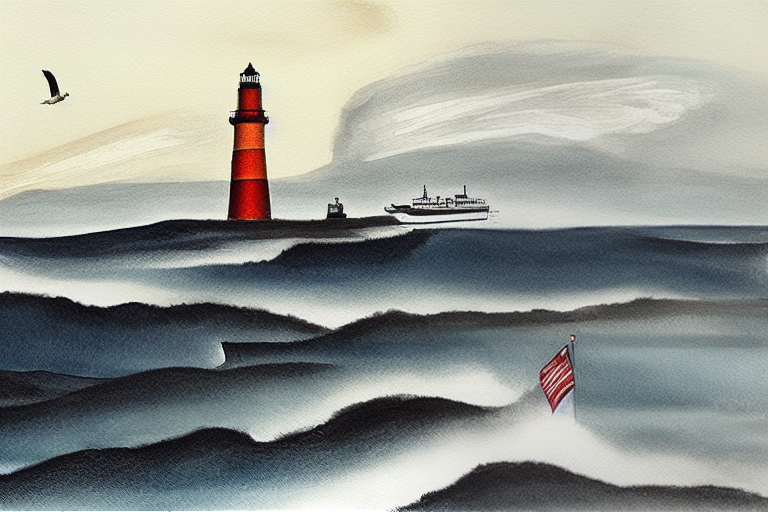
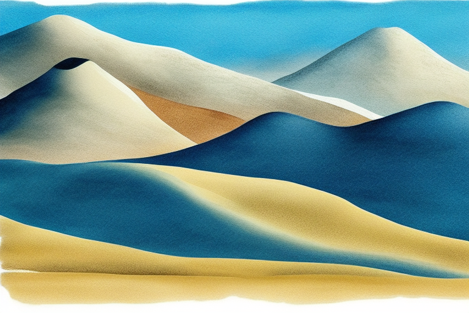

相同提示词 / 相同风格 / RTX 5070 Ti 12GB · 中国日报工笔插画风


| 指标 | SD 1.5 | SDXL | 说明 |
|---|---|---|---|
| 分辨率 | 768×512 | 1024×768 | SDXL 像素量 2.6x |
| 单张耗时 | ~3 秒 | ~9 秒 | SD 1.5 适合快速迭代 |
| 显存占用 | 2.6 GB | 6.7 GB | 12GB VRAM 两者均可行 |
| 构图质量 | 中 | 高 | SDXL 理解力更强，视觉隐喻更准确 |
| 风格一致性 | 中 | 较高 | SDXL 对"工笔插画风"理解更好 |
| 推荐场景 | 快速预览 / 迭代 | 正式发布 | 日常生产：SD 1.5 初筛 → SDXL 定稿 |